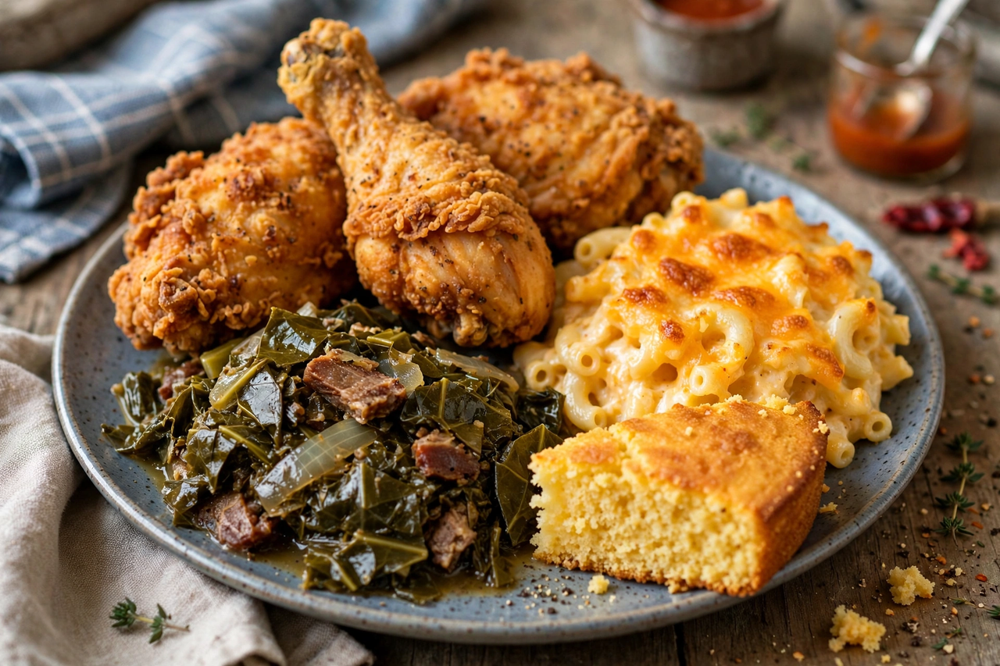

Soul food
From Wikipedia, the free encyclopedia

Soul food is the traditional cuisine of African Americans in the southern United States: a cooking built from West African inheritances (okra, black-eyed peas, rice, yams-in-name), from the rations and resourcefulness of slavery (greens with their pot liquor, chitterlings, neck bones, cornbread), and from Sunday abundance (fried chicken, macaroni and cheese, sweet potato pie). Carried north in the Great Migration, it became the food of Harlem and Chicago landmarks — Sylvia's, opened 1962, its most famous dining room — and a named emblem of Black American identity in the 1960s.
Origins
Enslaved cooks were the unacknowledged chefs of the plantation South: they cooked the big-house table and their own, in quarters, from what was given and what could be grown, hunted or fished. Foods of survival became foods of meaning — greens for luck and for their liquor's vitamins, black-eyed peas for New Year fortune (Hoppin' John), fried chicken for church Sundays and travelling ("the gospel bird"). After emancipation and migration, soul food restaurants fed the freedom struggle too: New Orleans's Dooky Chase, under chef Leah Chase, hosted civil-rights strategy over gumbo. Writers and cooks such as Edna Lewis insisted on the tradition's refinement and seasonality against caricature.
Debates and legacy
The cuisine's name, coined in the Black Power era, is celebratory; its health profile — salt pork, frying, sweet tea — is debated within the community that loves it, and a generation of chefs now cooks "soul food" in both faithful and lightened registers. Macaroni and cheese itself carries an American origin story: James Hemings, enslaved chef to Thomas Jefferson, cooked a macaroni pie learned in Paris; two centuries on, boxed mac is a supermarket giant and baked mac a church-supper crown. Soul food's legacy is the larger American table: much of what the world calls Southern cooking passed through Black hands.